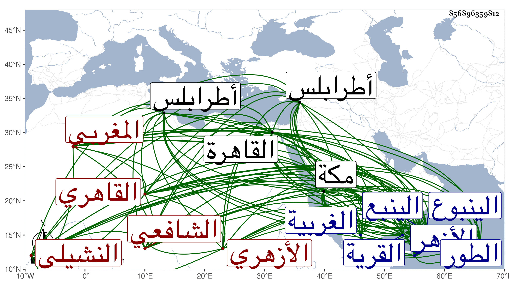

0902Sakhawi.DawLamic.ITO20230111-ara1.EIS1600.856896359812
Biography ID: 856896359812
905
محمد بن إبراهيم بن علي بن محمد الشمس المغربي الأصل النشيلي ثم القاهري الأزهري الشافعي نزيل مكة ويعرف بالنشيلي . ولد في سنة خمس وثلاثين وثمانمائة بنشيل من الغربية ونشأ بها ثم تحول مع شقيقه أحمد الماضي إلى الأزهر فجود القرآن على الفقيه إبراهيم الظني نسبة لقرية قريبة من طرابلس وحضر تقاسيم العبادي سنين وقرأ على الزيني زكريا في المنهاج وعلى النور السهيلي الشذور لابن هشام وسمع في العربية أيضا على الشرف موسى البرمكيني وأخذ الفرائض والحساب عن الشهاب السجيني والوسيلة لابن الهائم عن البدر المارداني بقراءة عبد العزيز الميقاتي وتميز فيهما بحيث أقرأهما ، وحج رجبيا في سنة الزيني عبد الباسط وهي سنة ثلاث وخمسين وأمير الركب جرباش فاسق وحكى لنا أن جملا مر وهو مثقل على عانة الفخر عثمان الديمي وهو نائم فانزلعت وكانت حياته على خلاف القياس وأن ممن حج حينئذ الشمس النشائي وتكرر حجه بعد ذلك إلى أن كان في سنة اثنتين وثمانين فقطنها وعينه الشمسي بن الزين لشهادة العمائر السلطانية ومباشرة أوقاف المدرسة والدشيشة وغيرها شركة لابن ناصر ودخلا القاهرة سنة تسع وثمانين بحرا حيث مرافعة شيخ الرباط نور الله العجمي إذ ذاك فيهما فلم البدري أبو البقاء القضية ورجع ابن ناصر معه وتخلف هذا قليلا عن الركب ثم توجه ليدركه فسمع بعجرود خوف الطريق فعرج إلى الطور فوجد جماعة ابن الزمن قد عوقتهم القدرة فركب البحر معهم فكان وصولهم إلى بندر الينبوع في خمسة أيام وركب معه إلى القرية فأقام بها عشرة أيام وتزوج هناك . ولما ورد عليه الركب رافقهم فكانت مدة مسيره من القاهرة إلى الينبع برا وبحرا بضعة عشر يوما كما قال وأقام بمكة وله أولاد وربما أقرأ الفرائض والحساب .
